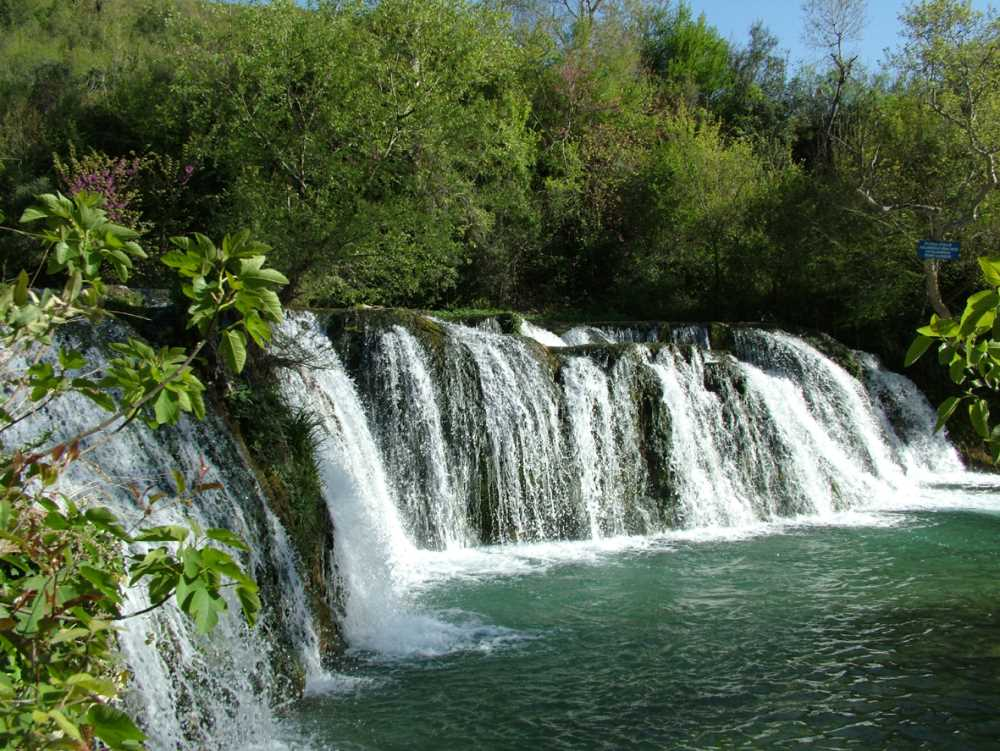

|  | |
|
Yöresel El Sanatları |
Dinî ve Etnik Çeşitlilik Osmaniye, tarihi boyunca birçok medeniyete ev sahipliği yapması sayesinde zengin bir kültürel mozaiğe sahiptir. Bu mozaiğin içinde yerel el sanatları, geleneksel mutfak, halk oyunları, müzik ve daha birçok kültürel unsur yer almaktadır. |
|